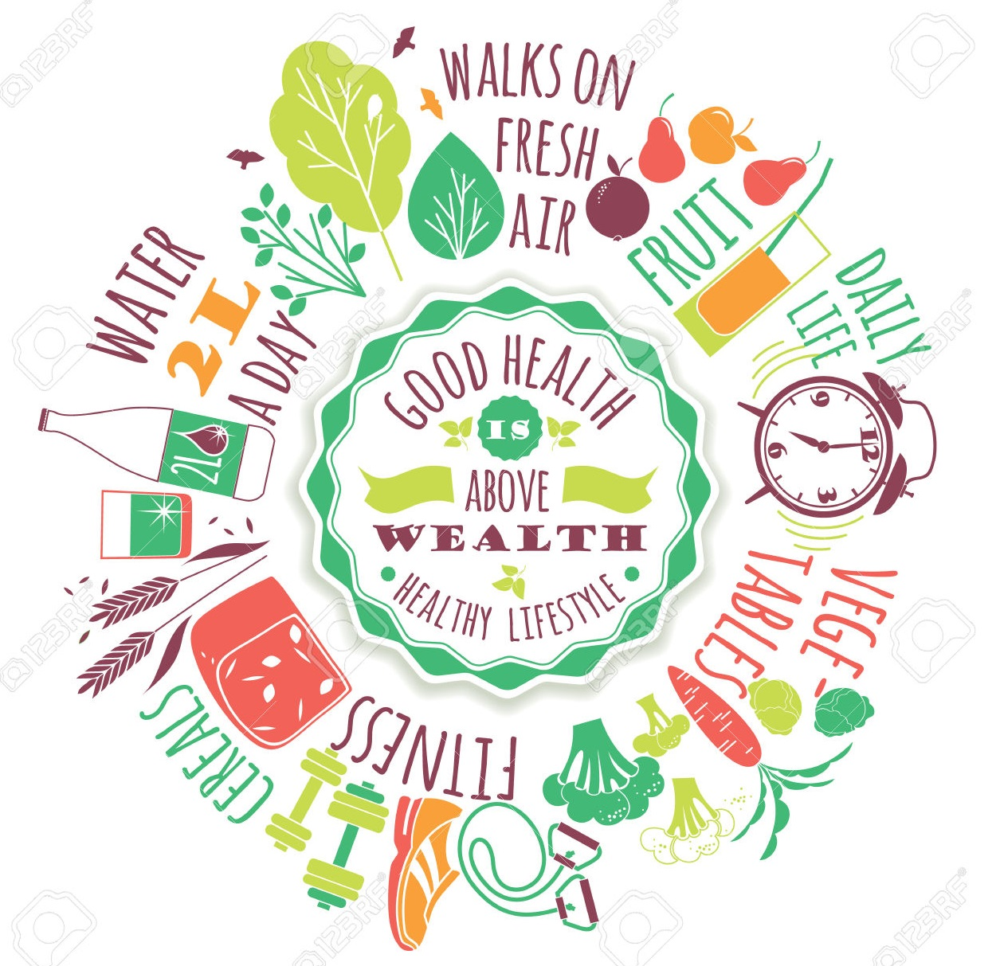
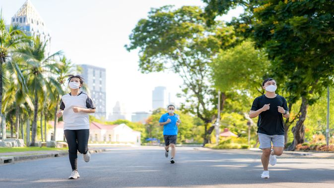
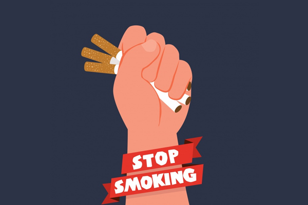

Cara Hidup Sehat
Ditulis oleh Kelompok 4. pada 4 Mei 2021

Gaya Hidup Sehat Yang Bisa Diterapkan Ditengah Pandemic Covid-19
Di tengah pandemic corona atau COVID-19 penting untuk kita agar selalu menjaga jarak sosial. Tetap #DiRumahAja dan memang jika harus keluar, jangan lupa untuk gunakan masker. selain itu, tidak ada salahnya jika kita mulai menerapkan hidup sehat. Tidak cukup sulit untuk menerapkan gaya hidup sehat.
Beberapa cara untuk menerapkan gaya hidup sehat:
1. Makan buah dan sayur serta minum 8 gelas air setiap hari
Buah dan sayur mengandung banyak vitamin, mineral, dan serat yang penting untuk tubuh kita. Makan buah dan sayur dapat meningkatkan kekebalan tubuh. Jika imunitas tubuh kita kuat maka virus dan bakteri rentan masuk ke tubuh.
Minum air putih 8 gelas sehari memang sangat dianjurkan oleh ahli kesehatan. Terlebih disaat pandemic Covid-19 seperti saat ini, banyak ahli kesehatan menyarankan untuk banyak minum air putih. Air berguna untuk seluruh sistem ditubuh berjalan dengan lancar dan sempurna.
2. Melakukan aktivitas fisik dan olahraga secara rutin
Seperti saat ini, jaga daya tahan tubuh dengan melakukan olahraga rutin #DiRumahAja, bisa dilakukan didalam rumah maupun dihalaman rumah. Selain untuk kebugaran dan meningkatkan imun tubuh, olahraga juga dapat mengubah suasana hati. Sebaiknya olahraga dilakukan secara rutin.
3. Istirahat yang cukup
Istirahat yang cukup ternyata mempengaruhi kesehatan. Tidur tidak hanya menghilangkan rasa kantuk tetapi juga sangat baik untuk kesehatan jiwa dan raga. Diduga kurang tidur dapat meningkatkan risiko penyakit ginjal, jantung, stroke, tekanan darah tinggi, diabetes, dan tekanan jantung yang tidak teratur. Istirahat dan tidur yang cukup dapat menjaga kesehatan tubuh kita.
4. Pola pikir yang positif

Saat pandemi corona seperti saat ini, ketakutan menghadapi virus corona dapat membuat orang mengalami gangguan cemas. Berpikir positif dapat menenangkan perasaan ditengah kabar mengenai corona. Pola pikir dapat mempengaruhi kesehatan seseorang.
Orang yang berpikir positif cenderung lebih sehat, mereka dapat menghadapi stress yang dimilikinya dengan baik. Orang yang berpikir positif juga lebih mudah untuk menerapkan gaya hidup sehat, sehingga tidak rentang penyakit.
5. Berhenti merokok
Ada banyak manfaat yang dirasakan karena berhenti merokok. Berhenti merokok dapat meningkatkan sistem imun tubuh. Berhenti merokok dapat meningkatkan sirkulasi darah, meningkatkan kadar oksigen, dan menurunkan peradangan atau inflamasi. Semua ini akan meningkatkan kekebalan tubuh.
Penerapan pola hidup sehat dari setiap individu seperti langkah-langkah diatas dapat meningkatkan kekebalan tubuh sehingga dapat menangkal virus Covid-19. Mari tangkal virus corona atau Covid-19 dengan menerapkan gaya hidup sehat, bersih, #DiRumahAja, dan gunakan masker jika memang harus keluar rumah.
"Mari jadikan dunia ini tempat yang lebih aman hanya dengan tetap berada didalam ruangan"
-

Vaksin Covid-19
Berikut Info Seputar Vaksindan lebih mengenal apa itu Vaksinasi.
-

Gejala Covid-19
Berikut Informasi mengenai indikasi gejala Covid-19.
-

Pencegahan
Berikut Informasi mengenai Tentang Pencegahan Virus Corona.